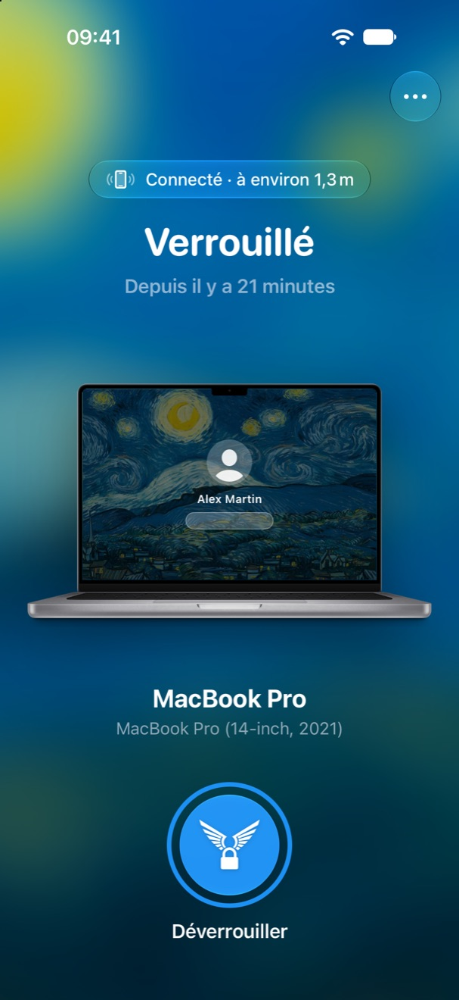
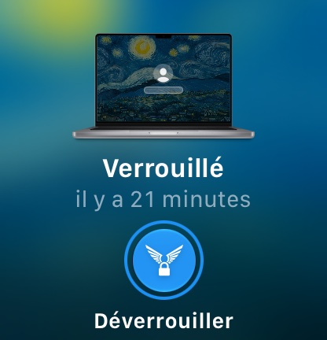
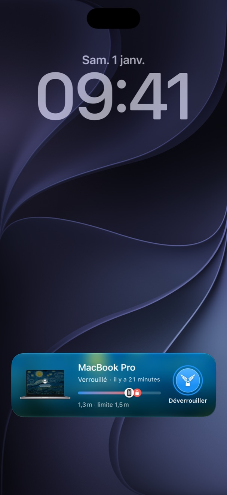

Verrouillage automatique
Au-delà de la distance que vous avez choisie, votre Mac se verrouille, avec l’animation Locky. Le réglage se fait d’un geste sur l’iPhone.
Pour Mac, iPhone et Apple Watch
Locky fait de votre iPhone la clé de votre Mac : éloignez-vous, il se verrouille. Revenez, il se déverrouille. Sans y penser.


Comment ça marche
Locky mesure en permanence la distance entre votre iPhone et votre Mac grâce au Bluetooth. À vous de choisir à partir de quand votre Mac se verrouille.
Sur votre Mac, puis sur votre iPhone avec TestFlight. Votre Apple Watch suit d’elle-même.
Comparez le code à 6 chiffres affiché sur les deux écrans, puis faites quelques pas pour calibrer la distance.
Éloignez-vous : votre Mac se verrouille. Revenez : Locky tape votre mot de passe pour vous.
Fonctionnalités
Au-delà de la distance que vous avez choisie, votre Mac se verrouille, avec l’animation Locky. Le réglage se fait d’un geste sur l’iPhone.
De retour devant votre Mac, il s’ouvre tout seul. Vous préférez confirmer ? Exigez Face ID ou Touch ID sur votre iPhone.
Verrouillez ou déverrouillez votre Mac depuis votre poignet. Vous pouvez même réserver le déverrouillage à votre montre.
L’état de votre Mac et la distance en direct, avec le bouton Locky, sans ouvrir l’app. Et des widgets sur iPhone, Apple Watch et Mac.
Quelqu’un utilise votre Mac pendant votre absence ? Il est pris en photo et vous êtes prévenu sur votre iPhone.
Déplié, l’iPhone Duo affiche le tableau de bord de votre Mac : musique en cours, processeur, mémoire et batterie.

D’un coup d’œil
Sécurité
Locky n’a pas de serveur. Tout se passe entre votre Mac, votre iPhone et votre compte iCloud.
Vos appareils échangent des clés à usage unique, confirmées par un code à 6 chiffres que vous comparez vous-même.
Tout ce qui passe en Bluetooth est chiffré de bout en bout, et un message intercepté ne peut pas être rejoué.
Le mot de passe de votre Mac est conservé dans le trousseau de votre iPhone, et ne voyage que chiffré.
Télécharger
Ouvrez le fichier téléchargé, puis glissez Locky dans le dossier Applications. Les mises à jour s’installent ensuite d’elles-mêmes.